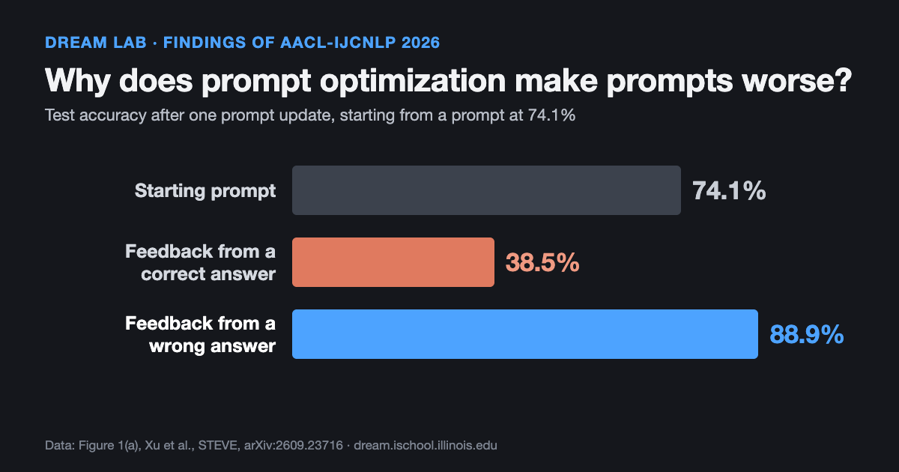
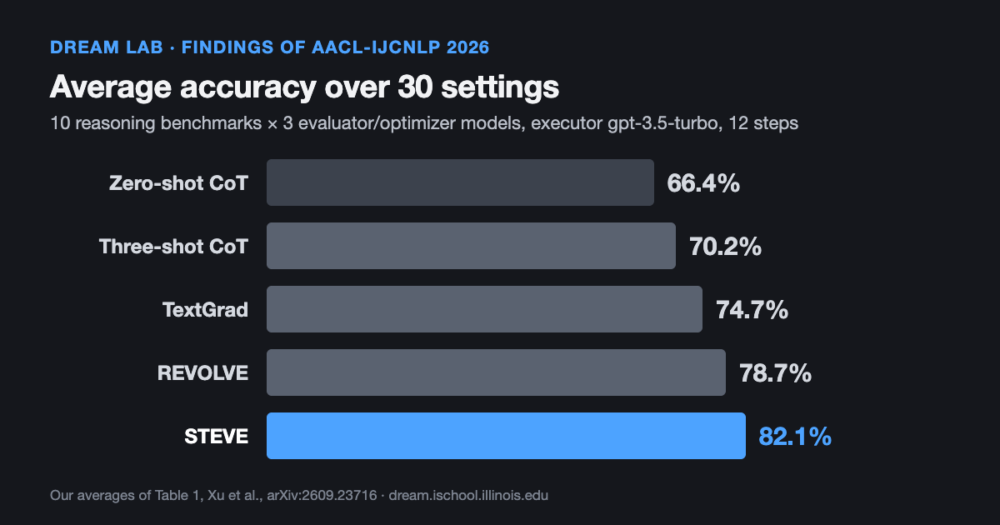

Why Does Automatic Prompt Optimization Make Prompts Worse?
Two habits of textual-gradient optimizers quietly damage prompts: learning from answers that were already right, and fixing hard cases until easy ones break. Changing what the optimizer learns from, and what it is allowed to keep, fixes much of it.
By Yifan Xu, Haohan Wang, and others · · About our Findings of AACL-IJCNLP 2026 paper
Tools such as TextGrad let a strong language model critique another model's answers and rewrite its prompt, step after step. This automatic prompt optimization often helps, but practitioners also see the opposite: a rewrite makes the prompt worse, or a prompt that improved for a few steps grows into a long checklist and starts failing simple questions. Our paper STEVE: Stabilizing Textual Gradient-Based Prompt Optimization via Error-Driven Refinement and Regularized Verification, by Yifan Xu, Yixuan Li, Xinzhuo Li, Yixin Gu, Yifan Shen, Lijun Yu (Google DeepMind) and Haohan Wang, at the University of Illinois Urbana-Champaign, accepted to Findings of AACL-IJCNLP 2026, traces this to two causes. In one example, a single rewrite based on feedback about a correctly answered question dropped test accuracy from 74.1% to 38.5%, while feedback about a wrongly answered one raised it to 88.9%.

Key findings
- In the STEVE paper (Xu et al., Findings of AACL-IJCNLP 2026), rewriting a prompt from feedback on a question the model had answered correctly dropped test accuracy from 74.1% to 38.5%, while rewriting it from feedback on a failed question raised accuracy to 88.9%.
- Optimizing a prompt only on hard, failed examples without any check first raised accuracy to 88.9%, then produced a prompt of more than 1,000 tokens whose accuracy fell to 73.2% after 12 steps; with STEVE's verification gate, the optimized prompt in the paper's example stayed at about 300 tokens with 95.1% accuracy.
- Across 10 reasoning benchmarks and 3 evaluator/optimizer models (gpt-4o, gemini-2.5-flash, gpt-5) with gpt-3.5-turbo as the model being prompted, STEVE averaged 82.1% accuracy, against 66.4% for the zero-shot chain-of-thought starting prompt, 74.7% for TextGrad and 78.7% for REVOLVE (averages of the paper's Table 1).
- TextGrad ended below its own zero-shot starting prompt in 5 of the 30 benchmark-model settings in the STEVE paper's Table 1; STEVE ended below it in none.
What goes wrong in textual-gradient prompt optimization?
Textual-gradient methods borrow the vocabulary of neural network training. An executor model answers training questions with the current prompt. An evaluator model compares the answers with the ground truth and writes a critique, the “textual gradient”. An optimizer model then rewrites the prompt to follow that critique. ProTeGi and TextGrad made this loop popular, and our lab's earlier method REVOLVE extended it by tracking how responses evolve across steps.
The loop has no built-in notion of step size or regularization, and each stage is a language model call whose small variations can be amplified by the next. The STEVE paper identifies two specific ways the loop goes wrong:
- Noisy feedback from correct answers. When the evaluator is asked to critique an answer that is already right, it has no real error to explain, so it tends to produce stylistic or arbitrary advice. The optimizer follows it anyway, and the prompt gets worse.
- Over-specialization on hard cases. Learning only from failures fixes that, at first. But each hard case pushes the optimizer to add another specific rule or multi-step procedure. After a few rounds the prompt is a long checklist written for the hardest examples, and it confuses the model on simple ones.
Appendix F of the paper shows what the second failure looks like in practice: a StrategyQA prompt optimized for 12 steps on hard cases alone, without any check, ends up telling the model to cross-reference external sources, use “a secondary model or external knowledge base”, attach confidence scores and “reflect on training data”, none of which a yes/no question from a single model call can actually do.
Key terms
- Automatic prompt optimization (APO)
- Improving a language model's prompt by an automated search or rewriting procedure that uses a small labeled training set, instead of by hand.
- Textual gradient
- A natural-language critique, written by an evaluator model, that explains why an output was wrong and how the prompt should change, used in place of a numerical gradient.
- Executor, evaluator and optimizer
- The three model roles in the loop: the executor answers questions with the prompt, the evaluator writes the critique, and the optimizer rewrites the prompt.
- Over-specialization (prompt overfitting)
- A prompt that accumulates rules tailored to the training examples it was fixed on, so that it scores well on them and worse on other inputs.
- Preservation set
- In STEVE, a pool of training examples that the starting prompt already answers correctly, used only to check that a candidate rewrite does not break them.
Should prompt feedback come from correct or wrong answers?
From wrong answers, according to the paper's experiments. The cover figure shows a single update in one example: feedback from a failed question took the prompt from 74.1% to 88.9%, while feedback from a correctly handled question took it to 38.5%. The paper reports the same direction for single-step updates on Object Counting, Navigate and GSM8k (its Figure 3), and confirms it in a full 12-step ablation. When feedback came only from correct examples, the prompt ended close to, or below, where it started:
| Variant (gpt-4o as evaluator/optimizer) | GSM8k | StrategyQA | Object Counting |
|---|---|---|---|
| Starting zero-shot CoT prompt | 76.3 | 88.7 | 77.9 |
| Feedback from correct examples only | 76.5 | 86.8 | 76.1 |
| Feedback from all examples | 82.5 | 90.1 | 87.1 |
| Feedback from failures only, no verification | 84.1 | 91.5 | 92.2 |
| STEVE (failures only + verification) | 86.2 | 93.2 | 95.7 |
Accuracy (%) from Table 3 of arXiv:2609.23716; the executor is gpt-3.5-turbo-0125.
The first row of the ablation and the starting prompt are almost the same, which is the point: critiques of correct answers carried very little useful signal. The authors connect this to older ideas in machine learning that also concentrate on hard examples, such as boosting, online hard example mining and prioritized experience replay.
Why do optimized prompts get longer and overfit?
Because the optimizer solves each hard case by adding instructions, and nothing in the basic loop ever asks whether those instructions still help the easy cases. In the paper's Figure 1(b), repeated refinement on hard cases without verification first raised accuracy to 88.9%, then kept growing the prompt to more than 1,000 tokens, and after 12 steps accuracy had fallen to 73.2%. The authors compare this to catastrophic forgetting in continual learning: the prompt keeps learning new special cases and forgets the general behavior it started with.
How does STEVE stabilize prompt optimization?
STEVE keeps the TextGrad loop and changes two decisions in it: which examples are allowed to produce feedback, and which rewrites are allowed to stay.
![Diagram of one STEVE optimization step: the current prompt is run on the training set; error-driven refinement takes feedback only from four examples the prompt gets wrong; an evaluator and optimizer critique the failures and write three candidate prompts; regularized verification scores each candidate as its gain on the failed batch minus a growing penalty times its drop on twenty preservation examples; the best candidate is kept only if its score is above zero, otherwise the current prompt stays](imgs/why_prompt_optimization_makes_prompts_worse/figure1.png)
- Error-driven refinement. At each step, STEVE re-runs the current prompt on the training set and samples a batch of 4 examples only from the ones it currently gets wrong. The evaluator writes one critique summarizing the common failure, and the optimizer writes 3 candidate prompts from it. If fewer failures remain than the batch size, optimization stops.
- Regularized verification. Before the run, STEVE builds a preservation pool from training examples the starting prompt already answers correctly. Each step draws a fresh sample of 20 from it. Every candidate gets a score: its improvement on the failed batch minus λt times its regression on the preservation sample, where λt = 1.5 + 0.1t grows each step so the gate becomes stricter over time. The best candidate replaces the prompt only if its score is positive; otherwise the old prompt stays.
After 12 steps, the final prompt is the checkpoint with the best accuracy on a separate validation set, and the test set is used once for the reported number. The design is independent of how the critique is written, so the authors describe it as applicable on top of other textual-gradient methods, not only TextGrad.
The prompts STEVE keeps tend to be structured but general. The paper's Appendix G shows an Object Counting prompt that tells the model to define what counts as an item, list every number before adding, and show intermediate sums, rather than rules tied to particular training questions.
How much better are the prompts?
The main experiment uses gpt-3.5-turbo-0125 as the executor on 10 benchmarks: GSM8k and MultiArith (math), StrategyQA and BBH Navigate (commonsense), BBH Object Counting, Penguins in a Table, Geometric Shapes and Date Understanding (symbolic and procedural), and MMLU College Physics and Machine Learning (expert knowledge). Each is run with three evaluator/optimizer models, for 30 settings, averaged over three runs.

| Benchmark (mean of 3 evaluator/optimizer models) | Zero-shot CoT | TextGrad | REVOLVE | STEVE |
|---|---|---|---|---|
| GSM8k | 74.4 | 80.7 | 82.8 | 84.5 |
| MultiArith | 83.8 | 95.6 | 98.9 | 99.2 |
| StrategyQA | 87.3 | 90.2 | 91.1 | 93.6 |
| BBH Navigate | 63.8 | 77.9 | 90.2 | 91.9 |
| BBH Object Counting | 77.4 | 80.1 | 84.6 | 90.2 |
| BBH Penguins in a Table | 70.2 | 92.5 | 91.0 | 96.5 |
| BBH Geometric Shapes | 39.0 | 39.6 | 54.4 | 57.7 |
| BBH Date Understanding | 69.4 | 74.6 | 76.3 | 80.4 |
| MMLU College Physics | 57.0 | 58.7 | 63.4 | 68.0 |
| MMLU Machine Learning | 41.8 | 56.5 | 54.7 | 59.3 |
| Average of 30 settings | 66.4 | 74.7 | 78.7 | 82.1 |
Accuracy (%), our per-benchmark means of Table 1 of arXiv:2609.23716 (executor gpt-3.5-turbo-0125, 12 steps). The paper reports the per-model numbers; three-shot CoT is omitted here for width.
STEVE had the best or tied-best result among the iterative methods in 27 of the 30 settings; the exceptions were GSM8k and MMLU Machine Learning with gemini-2.5-flash and Navigate with gpt-5, where REVOLVE was ahead. The largest gains over the starting prompt came on procedural tasks, for example +27.5 points on Navigate and +30.2 on Penguins in a Table with gemini-2.5-flash. The stability point shows up directly: TextGrad finished below the zero-shot prompt it started from in 5 settings (for example 66.9% vs 68.7% on Navigate with gemini-2.5-flash, and 33.9% vs 41.1% on Geometric Shapes with gpt-5), and STEVE in none.
A second experiment checks newer models and larger test sets, with gpt-5.4-mini as executor and gpt-5.4 as evaluator/optimizer, and adds ProTeGi as a baseline:
| Task | Zero-shot | ProTeGi | TextGrad | STEVE |
|---|---|---|---|---|
| BBEH Object Counting | 18.0 | 20.0 | 44.0 | 52.0 |
| BBEH Geometric Shapes | 24.0 | 32.0 | 34.0 | 44.0 |
| GSM8K-Platinum (1,009 problems) | 98.0 | 98.2 | 98.2 | 98.3 |
| DS-1000 (800 coding problems) | 27.5 | 32.1 | 32.0 | 32.5 |
Accuracy (%) from Table 2 of arXiv:2609.23716.
The gains are large on the hard symbolic tasks from BIG-Bench Extra Hard and close to zero on the nearly saturated GSM8K-Platinum and on DS-1000. In the appendix, STEVE also beats the evolutionary optimizer EvoPrompt on four BBH tasks with gpt-4o (for example 96.5% vs 84.3% on Penguins in a Table), and works with open models as evaluator and optimizer: with DeepSeek-V3.2 it reached 94.0% on StrategyQA and 82.0% on GSM8k.
How does this compare with other work on unstable prompt optimization?
- The methods STEVE builds on. Automatic Prompt Optimization with “Gradient Descent” and Beam Search (ProTeGi) by Reid Pryzant, Dan Iter, Jerry Li, Yin Tat Lee, Chenguang Zhu and Michael Zeng (EMNLP 2023) introduced natural-language “gradients” computed on minibatches and used beam search and bandit selection to choose among edits, improving an initial prompt by up to 31%. TextGrad by Mert Yuksekgonul, Federico Bianchi, Joseph Boen, Sheng Liu, Zhi Huang, Carlos Guestrin and James Zou (published in Nature in 2025) turned the idea into a general framework for optimizing any text component of a compound AI system. STEVE uses TextGrad as its base optimizer and leaves how critiques are written untouched; it controls which examples produce critiques and which rewrites are accepted.
- The opposite bet on correct predictions. Stabilizing Black-Box Prompt Optimization with Textual Regularization and Signal Aggregation (TRAS) by MohammadReza Davari, Utkarsh Garg, Weixin Cai and Eugene Belilovsky (Canadian Conference on Artificial Intelligence 2026, PMLR) tackles the same instability and also argues that optimizing only from failures causes drift. Its answer is to turn successful predictions into a second textual signal, a regularizer that tells the optimizer what to keep, and to average several sampled critiques. STEVE agrees that correct examples matter but uses them differently: never as a source of critique, only as a test that a candidate must pass. The two papers have not been compared head to head, so which use of correct examples works better is an open question.
- Is “gradient” even the right word? Textual Gradients are a Flawed Metaphor for Automatic Prompt Optimization by Daniel Melcer, Qi Chen, Wen-Hao Chiang, Shweta Garg, Pranav Garg and Christian Bock (arXiv, 2025) studies these methods through experiments and case studies and concludes that, although they often improve performance, the gradient analogy does not accurately explain how they behave. That fits STEVE's approach: instead of borrowing more machinery from gradient descent, it adds an explicit accept-or-reject test.
- Which edits hurt. Why Prompt Optimization Works, and Why It Sometimes Doesn't: A Causal-Inspired Edit-Level Analysis by Shuzhi Gong and Hechuan Wen (arXiv, 2026) analyzes prompts produced by several optimizers and finds that complexity-increasing and meta-instructional edits are associated with worse mathematical and multi-hop reasoning, while step-by-step edits help logical and sequential tasks. This is an independent, observational view of the over-specialization that STEVE's verification gate is designed to block.
- Overfitting as a representation problem. Our lab's TextReg: Mitigating Prompt Distributional Overfitting via Regularized Text-Space Optimization (Fu et al., arXiv 2026) studies the same symptom, prompts that grow longer and collect narrow rules, with a focus on out-of-distribution generalization, and regularizes the textual gradients themselves. STEVE leaves the gradients alone and regularizes through example selection and a verification gate.
What this does not show
- Small training and test sets. In the main experiment, most tasks use 50 training and 100 test examples (Penguins in a Table has 30 test examples and MMLU Machine Learning 23), so single-setting differences of a few points are within the range that noise could produce. The averages over 30 settings and three runs per setting are more reliable than any one cell.
- The headline example is one example. The 74.1% → 38.5% vs 88.9% comparison and the 1,000-token prompt come from illustrative runs in Figure 1; the systematic evidence is the ablation in Table 3, on three datasets with one evaluator/optimizer model.
- Higher cost per step. Scoring three candidates on the failed batch and the preservation sample adds executor calls. The paper estimates about 2,300 executor calls and about $4.05 for one run on BBH Object Counting at September 2025 prices.
- Model dependence. Results depend on the evaluator and optimizer models and their API versions; the authors recommend a short faithfulness check, a one-step sanity test and a multi-seed check before full runs.
- Hyperparameters were tuned on one task. The schedule λt = 1.5 + 0.1t and the preservation sample of 20 were chosen from sensitivity runs on BBH Object Counting (a sample of 40 scored lower, 91.0%, than 20, 95.7%), so other tasks may prefer other values.
- Small margins on easy or saturated tasks. On GSM8K-Platinum and DS-1000 the gain over TextGrad is 0.1 and 0.5 points.
- Code. The authors state they will release code and evaluation data with the paper; at the time of writing we have no public link to add here.
Frequently asked questions
Why does TextGrad sometimes make my prompt worse?
Usually for one of two reasons identified in the STEVE paper: feedback written about examples the model already answered correctly is mostly noise, and repeated fixes for hard examples pile narrow rules into the prompt until simple questions suffer. In the paper's Table 1, TextGrad ended below the starting zero-shot prompt in 5 of 30 benchmark-model settings.
Should prompt optimization use feedback from correct or incorrect examples?
Use incorrect examples to generate the feedback, and correct examples to check that nothing broke. In the STEVE ablation, generating feedback only from correct examples left GSM8k at 76.5% and Object Counting at 76.1% against starting scores of 76.3% and 77.9%, while failure-only feedback with verification reached 86.2% and 95.7%.
How do I stop prompt optimization from overfitting?
Treat every rewrite as provisional and test it on examples the original prompt already solved before accepting it. STEVE does this with 20 resampled preservation examples per step and a penalty that grows each step; removing this check lowered Object Counting accuracy from 95.7% to 92.2%. Selecting the final prompt on a separate validation set also helps.
How much does STEVE cost to run?
More than plain TextGrad, because each step writes three candidate prompts and scores each on the failed batch and the preservation sample. The paper estimates about 2,300 executor calls and about 4.05 US dollars for one run on BBH Object Counting with gpt-4o as evaluator and optimizer and gpt-3.5-turbo as executor, at September 2025 prices.
Citation
@inproceedings{xu2026steve,
title = {STEVE: Stabilizing Textual Gradient-Based Prompt Optimization via Error-Driven Refinement and Regularized Verification},
author = {Xu, Yifan and Li, Yixuan and Li, Xinzhuo and Gu, Yixin and Shen, Yifan and Yu, Lijun and Wang, Haohan},
booktitle = {Findings of the Association for Computational Linguistics: AACL-IJCNLP 2026},
year = {2026},
note = {arXiv:2609.23716}
}Related from our lab
- REVOLVE (ICML 2025): prompt optimization that tracks how responses evolve across steps, a baseline in this paper
- TextReg: regularized textual gradients against prompt distributional overfitting
- SIPDO (ICLR 2026): closed-loop prompt optimization with synthetic data feedback
- How prompt optimization evolved from genetic search to textual gradients, and what may come next
- Do self-evolving LLM agents forget what they could do? Capability loss during lifelong adaptation